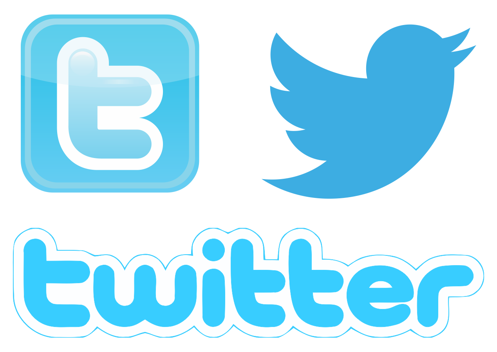

Twitter este o platformă de social media care permite utilizatorilor să trimită și să citească mesaje scurte (de maximum 280 de caractere) numite „tweets”. Utilizatorii înregistrați pot posta, aprecia și reposta un tweet postat de altă persoană (retweet), iar utilizatorii neînregistrați le pot citi doar pe cele care sunt disponibile public. Platforma este oferită de Twitter Inc., companie cu sediul în San Francisco, California, SUA.
Cuvântul twitter este un cuvânt englez cu traducerile pălăvrăgeală, agitație, freamăt, ciripit . Desemnează atât un site web fondat în 2006 care permite scrierea și transmiterea de mesaje de maxim 280 caractere (140 caractere până în 2017) (litere) prin Internet, cât și compania care oferă acest serviciu de tip „rețea socială”. Este uneori descris ca fiind „SMS-ul Internetului”.
Inițial, tweet-ul era limitat la 140 caractere, dar limita a fost dublată la 280 caractere în noiembrie 2017. Tweet-urile audio și video rămân limitate la 140 de secunde pentru majoritatea conturilor.
Twitter a fost creat de Jack Dorsey, Noah Glass, Biz Stone și Evan Williams în martie 2006 și a fost lansat în luna iulie a acelui an.
Twitter a ajuns în anul 2018 la peste 336 de milioane de utilizatori activi.
Istoric
Twitter a fost creat de Jack Dorsey, Noah Glass, Biz Stone și Evan Williams. Jack Dorsey a propus un serviciu
de mesaje scurte (SMS) prin care se putea trimite prietenilor mici actualizări de tip blog. Glass a propus
numele Twitter. Dorsey a trimis primul tweet („doar îmi configurez twitter”) pe 21 martie 2006, iar versiunea
completă a Twitter a debutat în iulie 2006. Inițial, Twitter a fost un serviciu SMS gratuit cu un element de
rețea socială.
În iunie 2010, aproximativ 65 de milioane de tweets au fost postate în fiecare zi, echivalând cu aproximativ 750 de tweets trimise în fiecare secundă, potrivit Twitter. În martie 2011, erau aproximativ 140 de milioane de tweets postate zilnic.
În aprilie 2010, au apărut „Tweet-urile promovate” – reclame care ar apărea în rezultatele căutării – ca sursă principală de venit. Mai târziu în acel an, au apărut și „Tendințe promovate”, care a plasat conținut promovat printre alte tendințe, și „Conturi promovate”, care a plasat conturile promovate în lista de conturi sugerate pe care utilizatorii ar dori să le urmărească.
La începutul anului 2019, Twitter a trecut de la urmărirea utilizatorilor lunari la urmărirea „utilizatori activi zilnici monetizabili”, numărul de utilizatori într-o zi care au fost expuși la reclame. Twitter a cunoscut o creștere considerabilă în 2020, probabil din cauza pandemiei de COVID-19. Twitter a anunțat în martie 2020 că va începe să marcheze tweet-urile care pot conține informații înșelătoare, în unele cazuri va oferi link-uri către pagini de informații de verificare a faptelor.
În noiembrie și decembrie 2021, Twitter a achiziționat și a închis doi concurenți: threader.app și Quill. Utilizatorii threader.app au fost direcționați să cumpere, în schimb, serviciul Twitter Blue, care la acea vreme era disponibil doar în unele țări.
La sfârșitul anului 2021, serviciul avea 217 milioane de utilizatori activi zilnici monetizabili. În noiembrie 2021, Dorsey a demisionat din funcția de CEO și a fost înlocuit de Parag Agrawal.
În aprilie 2022, directorul general de la Tesla Inc, Elon Musk, preia 9,2% din Twitter, în valoare de 2,9 miliarde dolari, și devine, astfel, cel mai mare acționar al rețelei sociale. Acțiunile Twitter au crescut cu aproape 27%, ca urmare a preluării de către Musk a unui procent de 9,2% din companie. În 25 aprilie 2022, Elon Musk a ajuns la un acord pentru achiziționarea platformei de socializare Twitter Inc în schimbul sumei 44 miliarde de dolari. Miliardarul, care are peste 83 de milioane de urmăritori pe Twitter, a spus în mod repetat că vrea să transforme platforma oferind mai multă libertate de exprimare și oferind utilizatorilor mai mult control asupra a ceea ce văd pe ea.
Tweets
Tweets sunt vizibile public în mod prestabilit, dar expeditorii pot restricționa livrarea mesajelor doar la
persoanele care le urmăresc. Utilizatorii pot trimite tweets prin site-ul web Twitter, aplicații externe compatibile
(cum ar fi pentru smartphone-uri) sau prin serviciul de mesaje scurte (SMS) disponibil în anumite țări. Utilizatorii
se pot abona la tweet-urile altor utilizatori — acest lucru este cunoscut sub numele de „urmărire”. Tweets pot fi
redirecționate de către alți utilizatori către propriul lor feed, un proces cunoscut sub numele de „retweet”.
Utilizatorii pot, de asemenea, să aprecieze sau să comenteze tweets. Aprecierile, comentariile și retweets al unui tweet sunt contorizate și afișate.
Retweet
Pentru a reposta un mesaj de la un alt utilizator Twitter, un utilizator poate face click pe butonul de retweet.
Utilizatorii pot răspunde la răspunsurile altor conturi. În 2015, Twitter a lansat „quote tweet” (numit inițial
„retweet with comment”), o caracteristică care permite utilizatorilor să adauge un comentariu la retweet,
încadrând un tweet în celălalt.
Din noiembrie 2019, utilizatorii pot ascunde răspunsurile la mesajele lor. Din mai 2020, utilizatorii pot selecta cine poate răspunde la fiecare tweet înainte de a le trimite: oricine, urmăritorii, anumite conturi și niciunul. Această abilitate a fost actualizată în iulie 2021 pentru a face caracteristica aplicabilă retroactiv tweet-urilor după ce acestea au fost trimise.
Hashtags
Utilizatorii pot grupa postările după subiect folosind hashtag-uri – cuvinte sau expresii prefixate cu semnul
„#”. În mod similar, semnul „@” urmat de un nume de utilizator este folosit pentru a menționa sau a răspunde
altor utilizatori.